- Topic 1: The Brain Dynamics
- Topic 2: The Optimization and Applications of Language Models
- Topic 3: The Controlability of Artificial Neural Networks
- Topic 4: Artificial Neural Networks on Medical Domains
| 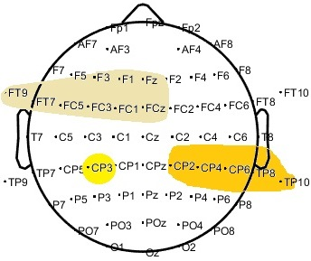 | Classifying and Scoring Major Depressive Disorders by Residual Neural Networks on Specific Frequencies and Brain Regions Cheng Kang; Daniel Novak; Xujing Yao; Jiayong Xie; Yong Hu. IEEE Transactions on Neural Systems and Rehabilitation Engineering, 2023, DOI: 10.1109/TNSRE.2023.3293051 |
code | |
| 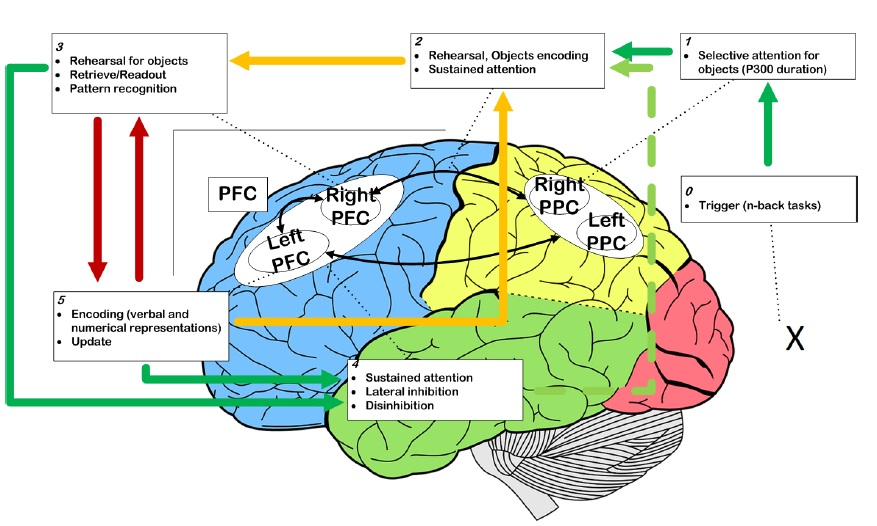 | Brain Networks of Maintenance, Inhibition and Disinhibition During Working Memory Cheng Kang*; Yuezhi Li*; Daniel Novak; Yudong Zhang; Qinghua Zhou and Yong Hu. IEEE Transactions on Neural Systems and Rehabilitation Engineering, 2020 |
code | |
| 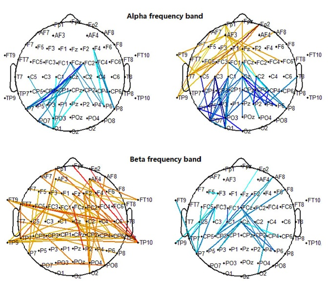 | Beta oscillations in major depression – signaling a new cortical circuit for central executive function Li, Y.*, Kang, C.*, Wei, Z., Qu, X., Liu, T., Zhou, Y., and Hu, Y. Scientific reports, 2017 |
code | |
| 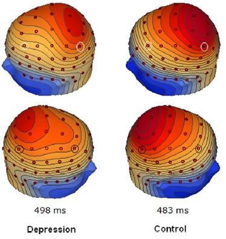 | Depression-related brain connectivity analyzed by EEG event-related phase synchrony measure Li, Y.*, Kang, C.*, Qu, X., Zhou, Y., Wang, W., and Hu, Y. Frontiers in human neuroscience, 2016 |
code |
Topic 2: The Optimization and Applications of Language Models
| 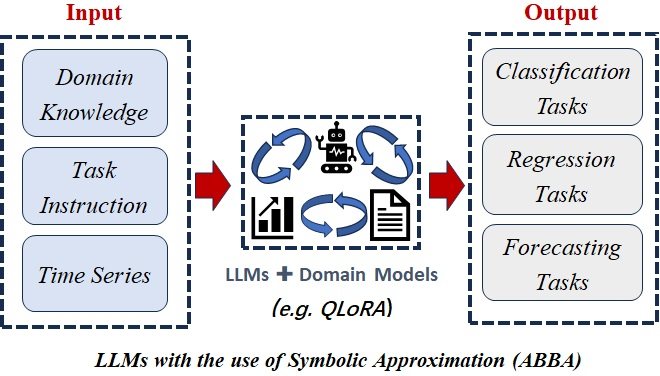 | LLM-ABBA: Understand time series via symbolic approximation. Carson, Erin, Xinye Chen, and Cheng Kang. arXiv e-prints (2024): arXiv-2411. |
code | |
| 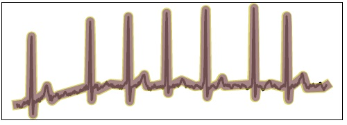 | Quantized symbolic time series approximation. Carson, Erin, Xinye Chen, and Cheng Kang. arXiv preprint arXiv:2411.15209 (2024) |
code | |
| 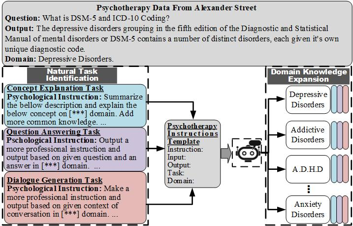 | Domain-Specific Assistant-Instruction on Psychotherapy Chatbot Cheng Kang, Yuqing Cheng, Katerina Urbanovad, Yong Hu, Daneil Novak. ICASSP 2024 WS8 EIHRC |
pdf slides |
code link |
| 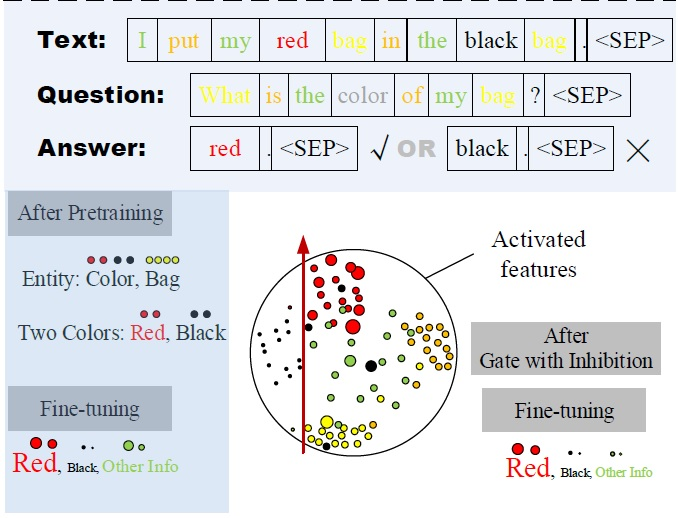 | InA: Inhibition Adaption On Pre-trained Language Models Cheng Kang, Jindich Prokop, Lei Tong, Huiyu Zhou, Yong Hu, Daneil Novak. Neural Networks 178 (2024): 106410 |
code | |
| 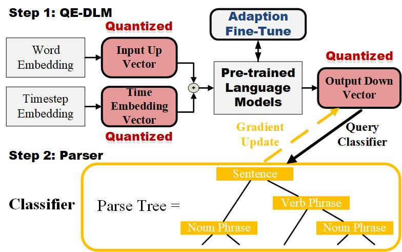 | Quantized Embedding Vectors for Controllable Diffusion Language Models Cheng Kang, Xinye Chen, Yong Hu, Daneil Novak. arXiv preprint arXiv:2402.10107 (2024). |
code | |
| 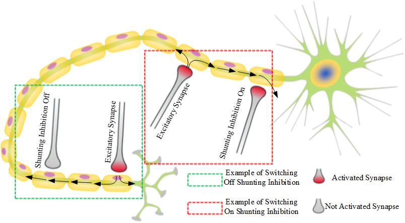 | giMLPs: Gate with Inhibition Mechanism in MLPs Cheng Kang, Jindich Prokop, Lei Tong, Huiyu Zhou, Yong Hu, Daneil Novak. arXiv preprint arXiv:2208.00929, 2023 |
code |
Topic 3: The Controlability of Artificial Neural Networks
 |
FuzH-PID:Highly Controllable and Stable DNN for COVID-19 Detection via Improved Stochastic Optimization. Xujing Yao*; Cheng Kang*, Xin Zhang, Shuihua Wang, Yudong Zhang. Expert Systems with Applications 268 (2025): 126323. |
code | |
| 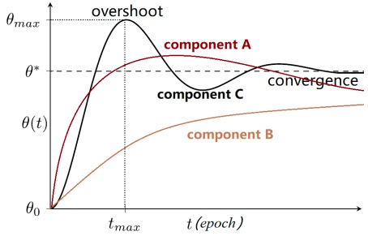 | Using Laplace Transform to Optimize the Hallucination of Generation Models. Cheng Kang, Xinye Chen, Daniel Novak, and Xujing Yao. 2024 18th International Conference on Control, Automation, Robotics and Vision (ICARCV). IEEE, 2024. |
code | |
| 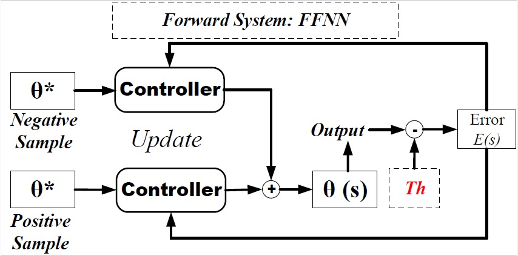 | Based on What We Can Control Artificial Neural Networks Cheng Kang; Xujing Yao. (2023). arXiv:2310.05692 |
code |
Topic 4: Artificial Neural Networks on Medical Domains
| 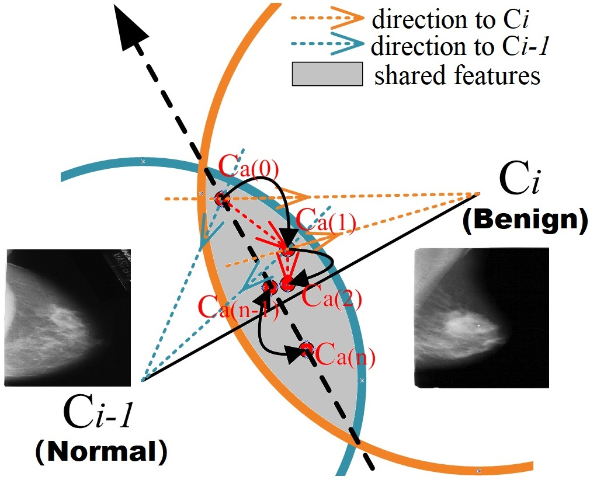 | Fuzzy Windows with Gaussian Processed Labels for Ordinal Image Scoring Tasks Cheng Kang; Xujing Yao; Daniel Novak. Applied Sciences 13.6 (2023): 4019. |
code | |
| 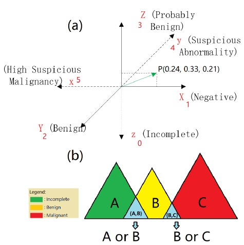 | A heuristic neural network structure relying on fuzzy logic for images scoring Cheng Kang; Xiang Yu; Shui-Hua Wang; David S. Guttery; Hari Mohan Pandey; Yingli Tian and Yudong Zhang, Y. IEEE Transactions on Fuzzy Systems, 2020 |
code | |
| 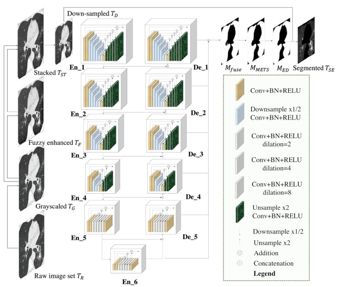 | AdaD-FNN for chest CT-based COVID-19 diagnosis Xujing Yao; Ziquan Zhu; Cheng Kang; Shui-Hua Wang; Juan Manuel Gorriz andYu-Dong Zhang. IEEE Transactions on Emerging Topics in Computational Intelligence, 2022 |
||
| 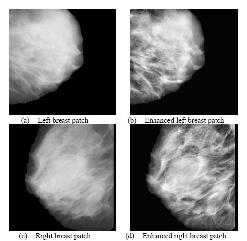 | ResNet-SCDA-50 for breast abnormality classification Xiang Yu; Cheng Kang; David S. Guttery; Seifedine Kadry; Yang Chen and Yu-Dong Zhang. IEEE / ACM transactions on computational biology and bioinformatics, 2020 |